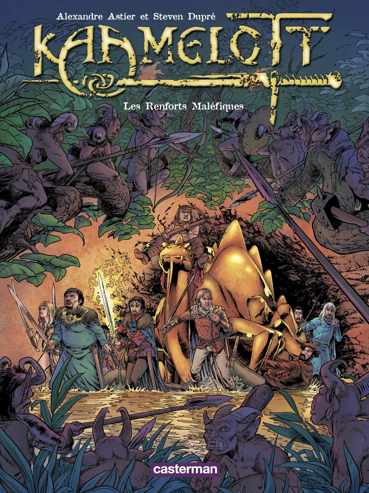

Film
Kaamelott est une série télévisée française humoristique et dramatique de fantasy historique créée par Alexandre Astier, Alain Kappauf et Jean-Yves Robin et diffusée entre le 3 janvier 2005 et le 31 octobre 2009 sur M6. L'origine du nom de la série est la cité de Camelot, avec une orthographe et une graphie particulières faisant ressortir les initiales AA de l'auteur, et les deux T finaux forçant l'homophonie avec camelote. De plus en plus populaire depuis 2006, la série s’inspire de la légende arthurienne et apporte une vision décalée de la légende en présentant un roi Arthur qui peine à être à la hauteur de la tâche que les dieux lui ont confiée. Entouré de chevaliers de la Table ronde passablement incompétents, confronté à la chute de l’Empire romain et aux incessantes incursions barbares, il doit encore trouver le Saint Graal. Humoristique dans ses premières saisons, la série commence à prendre une tournure plus orientée comédie dramatique à partir de sa quatrième saison, avant de basculer plus significativement dans le dramatique lors de la suivante. Au cours de cette évolution, la série a étendu la durée de ses épisodes, passant d'un format shortcom à une durée plus longue, atteignant les trois quarts d'heure dans sa sixième et ultime saison. L'évolution du format et des scénarios transforme ce qui était une série en feuilleton télévisé. Une suite est prévue sous forme de trilogie au cinéma, dont la sortie du premier volet est fixée au 21 juillet 2021.
Bd
Directement inspirée de la série télévisée éponyme, Kaamelott décrit la vie quotidienne du roi Arthur et de ses Chevaliers de la Table ronde, incapables, pleutres ou violents. La bande dessinée permet de repousser les frontières des possibilités narratives imposées par le format télévisé. En effet, l’histoire revêt un aspect plus « heroic fantasy » que la série télévisée et permet donc au lecteur de parcourir nombre de décors extérieurs et de situations irréalisables à la télévision – comme une avalanche engloutissant le roi et ses amis dans le premier tome, L’Armée du nécromant. La série de bande dessinée Kaamelott propose une histoire complète par tome, parallèlement à la série télévisée, avec les mêmes personnages, les mêmes comportements, mais avec cette fois une issue variable : le dénouement de L’Armée du nécromant est ainsi favorable aux personnages, le succès est enfin au rendez-vous.
La légende Roi Arthur

Le roi Arthur ou Arthur Pendragon est, d'après les romances médiévales, un seigneur breton qui aurait organisé la défense des peuples celtes des îles Britanniques et de Bretagne armoricaine face aux envahisseurs germaniques à la fin du Ve siècle ou au début du VIe siècle. La légende d'Arthur est principalement inspirée par le folklore1 et l'invention littéraire, et son existence historique n'est pas attestée. Les sources historiques sont recueillies sur de rares textes contradictoires, essentiellement des poèmes et contes en langue galloise, des annales et chroniques décrivant la romanisation et la christianisation de la Grande-Bretagne comme les Annales Cambriae et l’Historia Brittonum et la vie des premiers saints de l'île bretonne, comme Gildas le Sage. Le nom d'Arthur apparaît également dans d'anciens poèmes tel que le Y Gododdin. Son histoire se situe à une époque où le terme « Bretagne » désignait la grande moitié sud de l'actuelle Grande-Bretagne.